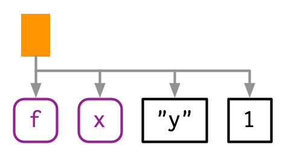
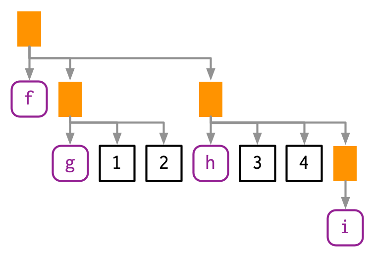
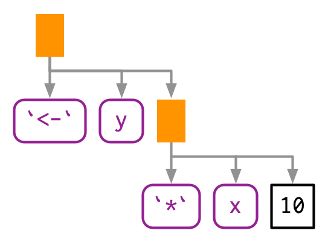

To compute on the language, we first need to understand its structure.
The function expression() allows for multiple expressions, and in some ways it acts similarly to the way files are source()d in. That is, we eval()uate all of the expressions at once.
expression() returns a vector and can be passed to eval().
#> [1] 40#> [1] FALSE#> [1] TRUEexprs() does not evaluate everything at once. To evaluate each expression, the individual expressions must be evaluated in a loop.
lobstr::ast():
#> █─f
#> ├─█─g
#> │ ├─1
#> │ └─2
#> └─█─h
#> ├─3
#> ├─4
#> └─█─iEvery call in R can be written in tree form because any call can be written in prefix form.
An infix operator is a function where the function name is placed between its arguments. Prefix form is when then function name comes before the arguments, which are enclosed in parentheses. [Note that the name infix comes from the words prefix and suffix.]

TRUE, 1L, 2.5, "x", or "hello".rlang::is_syntactic_literal().#> [1] TRUE#> [1] TRUE#> [1] TRUE#> [1] TRUE#> [1] TRUExmtcarsmeanis.name() is identical to is.symbol()), but this book used symbol consistently because “name” has many other meanings.expr().rlang::sym().as.character() or rlang::as_string().as_string() has the advantage of clearly signalling that you’ll get a character vector of length 1.str() tells you that it is a symbol, and is.symbol() is TRUE:rlang::syms().Note that as_string() will not work on expressions which are not symbols.
typeof() and str() print language for call objects (where we might expect it to return that it is a “call” object), but is.call() returns TRUE:#> █─read.table
#> ├─"important.csv"
#> └─row.names = FALSE#> [1] FALSE#> [[1]]
#> [1] "important.csv"
#>
#> $row.names
#> [1] FALSErlang::call_standardise() which standardizes all arguments to use the full name:#> Warning: `call_standardise()` is deprecated as of rlang 0.4.11
#> This warning is displayed once every 8 hours.#> read.table(file = "important.csv", row.names = FALSE)rlang::call2().lobstr::ast() to explore some of the details of R’s grammar, and then show how you can transform back and forth between expressions and strings.ast() to see what R does:?Syntax, very few people have memorized the complete ordering.#> █─`*`
#> ├─█─`(`
#> │ └─█─`+`
#> │ ├─1
#> │ └─2
#> └─3In this case it doesn’t matter. Other places it might, like in ggplot2.
In R, most operators are left-associative, i.e., the operations on the left are evaluated first:
rlang::parse_expr():parse_expr() always returns a single expression.; or ,, you’ll need to use rlang::parse_exprs() which is the plural version of rlang::parse_expr(). It returns a list of expressions:rlang::expr_text():epxr_type() function to return the type of expression element as a string.#> [1] "constant"#> [1] "symbol"#> [1] "call"switch() statement.recurse_call()F and T in our code rather than FALSE and TRUE is bad practice.F and T.T vs TRUE.#> [1] TRUE#> [1] FALSETRUE if any subcomponent contains a logical abbreviation.purrr::some() function, which iterates over a list and returns TRUE if the predicate function is true for any element.logical_abbr_rec <- function(x) {
switch_expr(x,
# Base cases
constant = FALSE,
symbol = as_string(x) %in% c("F", "T"),
# Recursive cases
call = ,
# Are we sure this is the correct function to use?
# Why not logical_abbr_rec?
pairlist = purrr::some(x, logical_abbr_rec)
)
}
logical_abbr(mean(x, na.rm = T))#> [1] TRUE#> [1] TRUEfind_assign_rec <- function(x) {
switch_expr(x,
constant = ,
symbol = character()
)
}
find_assign <- function(x) find_assign_rec(enexpr(x))
find_assign("x")#> character(0)#> character(0)flat_map_chr <- function(.x, .f, ...) {
purrr::flatten_chr(purrr::map(.x, .f, ...))
}
flat_map_chr(letters[1:3], ~ rep(., sample(3, 1)))#> [1] "a" "a" "b" "b" "c" "c"find_assign_rec <- function(x) {
switch_expr(x,
# Base cases
constant = ,
symbol = character(),
# Recursive cases
pairlist = flat_map_chr(as.list(x), find_assign_rec),
call = {
if (is_call(x, "<-")) {
as_string(x[[2]])
} else {
flat_map_chr(as.list(x), find_assign_rec)
}
}
)
}
find_assign(a <- 1)#> [1] "a"#> [1] "a" "b"find_assign_call <- function(x) {
if (is_call(x, "<-") && is_symbol(x[[2]])) {
lhs <- as_string(x[[2]])
children <- as.list(x)[-1]
} else {
lhs <- character()
children <- as.list(x)
}
c(lhs, flat_map_chr(children, find_assign_rec))
}
find_assign_rec <- function(x) {
switch_expr(x,
# Base cases
constant = ,
symbol = character(),
# Recursive cases
pairlist = flat_map_chr(x, find_assign_rec),
call = find_assign_call(x)
)
}
find_assign(a <- b <- c <- 1)#> [1] "a" "b" "c"#> [1] "x" "y"missing_arg() or expr().rlang::is_missing()eval() on an expression evaluates each individual expression.expression() and parse():